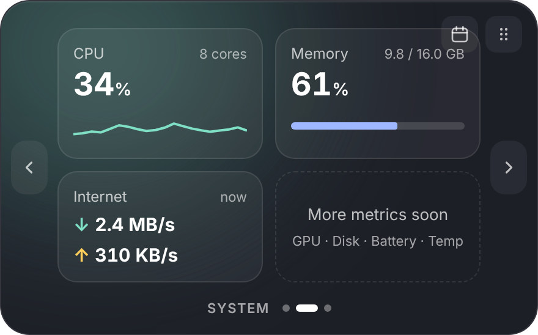
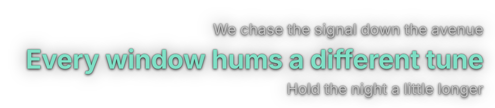

The pill
Always there, never in the way
The pill shows the track and the controls. Switch it to lyrics, or to a system readout, whenever you like.
Now playing
Album art, title, artist, prev / play / next.
Lyrics on the taskbar
The current line replaces the title, scrolling if it’s long.
System overview
CPU, memory and network at a glance.
The panel
Hover for the full picture
Rest the pointer on the pill and a panel opens above the taskbar. It closes when you move away. Side arrows switch pages.

Lyrics
Synced lyrics, on your desktop
Show 3 or 5 lines in the bottom-right corner with no background. Sung words light up, and clicks pass through to whatever’s underneath.

And more
Small, quick and yours
Works with your player
Anything that reports to Windows media controls: Spotify, Apple Music, browsers, Media Player.
Your lyrics, your way
Use your own .lrc files, search for a better match, or let kRon find them from LRCLIB.
Move it anywhere
Drag the pill off a crowded taskbar. Drop it at a screen edge and it becomes a narrow vertical column.
Calendar flyout
Optionally move kRon off the taskbar: a now-playing card slides in above the Windows notifications when you open the clock.
Stays out of the way
Hides during fullscreen games, videos and presentations.
Make it match
Dark or light, your own accent colour, and your own lyric colours.
Install
Up and running in a minute
- Open the latest release and download
kRon_x.y.z_x64-setup.exefrom Assets. - Run it. kRon appears on the taskbar next to your system tray.
- Play something in Spotify, a browser or any media app.
Seeing a Windows or antivirus warning? Releases are not code-signed yet, so Windows may show “Windows protected your PC” (choose More info, then Run anyway) and some antivirus software may flag the installer as unknown. See Code signing policy below. The source is open, and you can build it yourself.
Trust
Open, local and upfront
Code signing policy
We are applying for free code signing for open-source projects from SignPath Foundation, with signing performed by SignPath.io. Until the first signed release is published, installers are unsigned. This section will be updated when that happens.
- Releases are built from the public source by GitHub Actions in arontz/kRon, then signed. Nothing is built or signed by hand.
- The signing request is made by the release workflow when a version tag is pushed.
- Maintainer, reviewer and approver: arontz.
- Only the installer is signed at first. The installed app and the uninstaller are not yet.
Privacy
kRon has no accounts, no analytics and no telemetry. What you play, your settings and the lyrics it saves stay on your PC. It only talks to the internet in these cases:
- Finding lyrics: when a song starts and no lyrics are saved, it asks LRCLIB for them, sending the song’s title, artist, album and length.
- Search for lyrics: only when you use it, it sends your search text to LRCLIB and to QQ Music.
- Check for updates: only when you click it in the tray menu, it asks the GitHub API for the latest release.